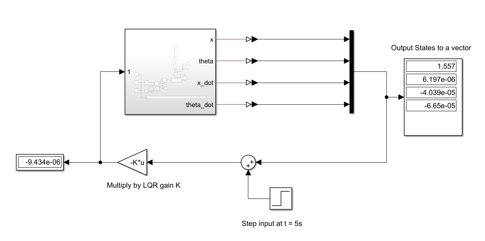

Given the abundance of sources detailing cart-pole dynamics derivations, I'll focus on the implementation aspects of this project. In broad strokes, the underlying mathematical model employs the Euler-Lagrange formulation with several simplifying assumptions including frictionless motion, small angle approximation, rigid body dynamics, and constrained motion along the x-axis. Though idealized, these assumptions capture the essential dynamics needed for controller design.
Modern robotics simulations span a range of tools and languages. High-performance frameworks like MuJoCo and visualization frameworks like MeshCat offer sophisticated capabilities, often implemented in Julia, C++, or Python for computational efficiency and flexibility. For this project, I selected MATLAB with Simulink and Simscape as the simulation platform, because they provide integrated control toolboxes and an intuitive interface that allows for rapid prototyping and a natural progression from math to simulation. The subpar performance and efficiency of MATLAB was not a concern for this educational project.
The code is streamlined, focusing on essential components for LQR control including system parameters, state-space representation, cost function weights, and calling the MATLAB built-in LQR solver.
clear all; clc;
nx = 4;
nu = 1;
% Target state
xf = [0; 0; 0; 0]; % p, q, dp, dq
% IC
x0 = [0 0 0 0] + [0, 35 0, 0];
% state space matrices
M = 0.1813;
m=0.0454;
l=0.127;
% l=0.3;
g=9.81;
A = [0 0 1 0;
0 0 0 1;
0 m*g/M 0 0;
0 (m*g + M*g)/(M*l) 0 0];
B = [0;0;1/M;1/(M*l)];
C = eye(4);
D = 0;
% Check controllability (rank = # of states)
controllability = rank(ctrb(A, B))
% Stability (has one positive and one negative, so system is unstable)
eig(A)
% ss system
cartpole = ss(A,B,C,D);
Q = diag([100 100 10 10]);
R = 1;
K = lqr(cartpole, Q, R)
I initially attempted to implement the infinite-horizon LQR (ihlqr)manually using the discrete time algebraic Riccati equation, but this custom implementation failed to produce suitable gains. The custom ihlqr function is shown below.
%% Infinite horizon LQR
% Demonstrates Ricatti Recursion, but doesn't actually work, because
% of linearization of dynamics and difference between internals of MATLAB
% lqr() function and this ihlqr function
function [S, K] = ihlqr(A, B, Q, R, max_iter, tol)
% Default iter and tol
if nargin<6
tol = 1e-6;
end
if nargin<5
max_iter = 1000;
end
% Declare S
S = Q*1.0;
for ricatti_iter = 1:max_iter
K = (R+B'*S*B)\(B'*S*A);
newS = Q + K'*R*K + (A - B*K)'*S*(A - B*K);
if norm(S-newS, Inf) < tol
fprintf("Converged after %d iterations\n", ricatti_iter);
S = newS;
K = reshape(K,1,[]);
return;
end
S = newS;
end
error("Did not converge")
end
Upon further investiation, I suspect several factors contributed to this discrepancy, the first of which was the use of the discrete time rather than continuous time Riccati equation. Additionally, MATLAB's solver incorporates advanced numerical methods such as Eigenvalue decomposition, more sophisticated variable initialization strategies, and other techniques that ensure numerical stability and convergence. Sticking to using MATLAB's lqr() function, I obtained the gain K and used it in the full-state feedback controller shown below.
The final simulation result is shown below where the cart begins at a 35 degree angle. The cart is also perturbed with a step input at 5s.
As a student balancing research commitments and graduate applications on a limited budget, I prioritized simplicity and cost-effectiveness. The challenge was to create a functional cart-pole system that could validate control theory concepts without hurting my wallet or taking up too much time.
The system is essentially a belt-driven cart traveling along an aluminum extrusion rail, which is the most minimal configuration I could envision. The structural components were machined from scrap metal available at the Baum Family Makerspace where I worked as a student machinist. Standard screws, T-nuts, washers, hex nuts, and even the aluminum extrusion were also sourced from the Makerspace. Since I planned to personally manufacture the custom components, I made most features planar. This allowed most features to be cut out quickly on a waterjet with minimal manual and CNC machining required. The full design is shown below.
Initially, I considered purchasing a commercial linear gude rail with integrated slider like the HIWIN MG series. However, even knockoffs sell for north of $60, which was enough motivation to design and machine the cart-rail system myself. Conveniently, this experience was also exposed me to mechanical components and machining limitations that I'd never seen or considered before. The custom cart features wheels designed to ride along the extrusion channels. While this is conceptually sound, I neglected the careful tolerancing and key components for smooth and rigid translational motion. Therefore, my cart wobbled during operation as shown below, which became a primary source of disturbance in the final system, directly impacting performance.
Another source of disturbance was the insufficient stiffness at the pole-encoder junction. The first iteration of the junction was designed as two main sections, which resulted in substantial wiggling as shown below.
In the second design, the components of the junction were split differently to ensure rigidity at crucial sections. The result shown below was a significant improvement from the first iteration, but still allowed for some play around the encoder shaft. This mechanical flexibiity likely contributed to measurement noise and system identification challenges.
This development phase highlights the univeral engineering dilema of balancing balancing cost, performance, and time. While budget friendly choices resulted in a functional system, many issues that emerged could've been avoided with more expensive commerical components.
To implement the LQR controller, I needed to track the full-state $\mathbf{x} = \begin{bmatrix} p & v & \theta & \omega \end{bmatrix}^T$ where \(p\) and \(v\) are the cart's linear position and velocity. \(\theta\) and \(\omega\) are the pendulum angle and angular velocity. For this, I used two 600 pulse-per-revolution (p/r) encoders with one mounted on the cart and another directly measuring linear motion via the drive pulley. Both encoders had quadrature output (2 pins), giving 4x resolution and yeilding 2400p/r. This resulted in an angular resolution of 2\(\pi\)/2400rad/p. The conversion factor to linear distance for the cart position encoder depended on the drive pulley circumference. With a pulley diameter \(d\) mm, the linear conversion factor was \(c=(\pi d)\)/2400 mm/p.
The motor was controlled with a TB6612FNG dual motor drier, chosen for it's adequate current handling and ready availability. To manage the computational load and minimize control latency, I distributed the processing accross two Arduino microcontrollers communicating via I2C. The controller Arduino runs the LQR algorithm, manages I2C communication, and outputs PWM motor commands. The sensor Arduino processes pendulum encoder readings.
A critical challenge in bringing simultion to the real world was converting the LQR controller's force output to appropriate motor commands. The inexpensive motor lacked torque constant specifications, necessitating empirical calibration. The straightforward approach I devised to establish the force-PWM relationship involved (1) applying a constant PWM signal for 1s (2) measuring the distance traveled (3) calculating acceleration as $a = distance/(1s)^2$ (4) determining applied force $F=ma$ where $m$ is the cart mass. Testing was performed at four PWM values each with three trials.

As shown in the figure above, the PWM-force relation was linear with a conversion factor equal to the fitted line's slope. However, these trials were done only for motion to the right. Leftward actuation trials revealed asymetry likely stemming from mechanical factors including belt tension variations and friction differences from the wobbliness of the cart. While this hardware limitation could compromise LQR performance, I proceeded with implementation using the rightward calibration data, acknowledging that directional compensation may be necessary in future iterations.
The software implementation largely consists of data processing. The controller Arduino compiles the state vector and computes the LQR control law $u=-Kx$, applies the force-PWM conversion, and outputs the motor command. The code can be accessed on the project GitHub repo.